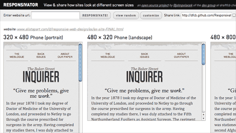
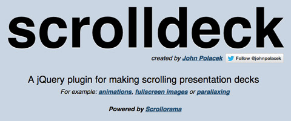

John Polacek
Developer+
Follow @johnpolacekHTML + CSS + JS
Responsivator!
See and share how web pages look at different screen sizes
dfcb.github.com/ResponsivatorSuperScrollorama
The jQuery plugin for doing cool scrolly stuff.
johnpolacek.github.com/superscrolloramaScrollorama

The original jQuery plugin for doing cool scrolly stuff.
johnpolacek.github.com/scrolloramaExtra Strength Responsive Grids
A Fluid CSS Grid System for Responsive Web Design
dfcb.github.com/extra-strength-responsive-gridsChannel of Awesome
Web playlists of YouTube and Vimeo videos that play fullscreen in a loop
dfcb.github.com/channel-of-awesomestacktable.js
jQuery plugin for stacking tables on small screens.
johnpolacek.github.com/stacktable.jsWhat The Heck Is Responsive Web Design?
Introductory presentation to Responsive Web Design
(uses my Scrolldeck plugin)
Scrolldeck
jQuery plugin for making vertically scrolling presentation decks.
(uses original scrollorama plugin)
jQuery Configurator
The jQuery plugin for injecting url parameters into webpages and JSRender templates
johnpolacek.github.com/jquery.configurator/Other Stuff
Are You A Brogrammer?

Not a github project, but a silly little quiz I made for fun.
areyouabrogrammer.comThe Never Ending Quest To Build Cool Stuff
Content for a talk I gave at Prototype Camp Chicago
johnpolacek.github.com/The-Never-Ending-Quest-To-Build-Cool-StuffFront End Dev Questions
My fork of Darcy Clark’s Front End Interview Questions, where I fill in my answers.
github.com/johnpolacek/Front-end-Developer-Interview-QuestionsApps
Match The Letter
A picture game that helps kids learn the alphabet.
github.com/johnpolacek/Match-The-Letter-GameVideo Gallery
Simple app built for quickly creating custom video galleries using the Corona SDK.
github.com/johnpolacek/Video-Gallery